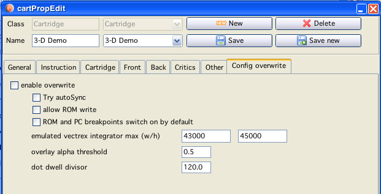
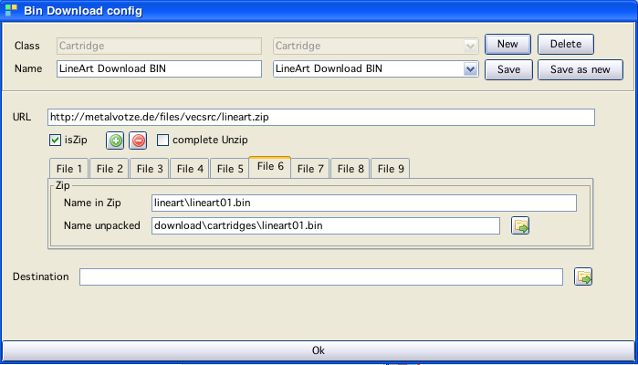

Cartridge configuration
Cartridge configuration
Cartridges are the "main" input to vecxi.
Cartridges can be configured with all kinds of properties - some emulation relevant, some only for documentation or history reasons.
Most options and fields are very straight forward.
page 1 - general
names and checkboxes can be filled as usual
a "homepage" for homebrew authors can be provided, the button starts the current system browser to that page.
overlay config is simple a png (as in MESS)
the binary file configuration may be somewhat involved and is splitted into two options:
first:
chosing a file locations with a file choser, for this use the buttons "+" and "-" to add (or delete from config) a "rom images" to your configuration (basically one image per bank, most of the time only one image!)
Double click on the table row, lets you chose a "rom" - done
second, configuration of a link to some rom in the internet ... see below...
page 2 - instructions
can either be:
a textfile (chose from a file choser)
a pdf file (chose from a file choser)
or a text entered (which than will be saved as a text file and appear as a file in the above field)
or a pdflink (pdf links are configured exactly like linked roms - therefor, see below)
page 3-5 - images
The images can be chosen with a file choser dialog OR, can be pasted using the button. The pasted image will be saved to a directory, and named like the cartridge name + a random number.
page 6 - critics
Either a text file - or a "generated" text file (see instructions)
page 7 - others
2 "Other" possible text entries, + a in game image field (use as images above)
If these are not enough ... I have still some spare room - I can provide additional fields :-).
page 8 - Configuration overwrite

Configuration overwrite
Here you can enable for each cartridge some selected "overwrite" values that change the emulator. This is mainly intended for roms that have special "needs" to display correctly. ROMS with known bug, that would otherwise invoke a debug popup (rom write), display sizes (Frogs "EmptyScreentro" should be displayed outside the emulation display to achieve its effects - but each vectrex has that different, and per default Vide has a LARGE display range) etc. Spinball does not run well with the autosync feature - that is no bug (on neither side) - just a fact.
Links
There are people which offer their files freely - as long as you do not distribute them in any way. These can be text, pdf or binaries (or whatever). Since these files are still basically free and of interest to vectrex "users" - I provided a mechanism to include them in the configuration without violating the rights.
You can download these files using VIDE. If you just use the "Starter" window this functions quite seemless. But at some stage these files and their internet locations must be configured...
This is the time - this is the place!

Downloader configuration
As described above, at the moment there are two kinds of files (and places) where the mechanism is used, rom images and instructions. The handling is identical, therefor I will just go thru one example - a rom image.
Look at the window above. You see:
a field with a name, this is a IDENTIFIER (must not be doubled!) of the downloader configuration you are doing, it stands to reason to name it appropriatly!
a URL to a location. Only a single file can be "downloaded" (and downloadble configured) at one time
although, the file can be a zip file, which can be extracted
if the file is a zip and should be extracted, you can use the
"+" and "-" button to configure the number of files to extract
enter for each of these files the "path" in the ZIP
and a location where to save it to
if it is no zip, than you must enter a destination file location at the bottom
done
Conventions:
All downloaded zip files are downloaded to the path:
(relative to vide main dir)
download/zips
and stored there
Rom images downloaded I give the location:
download/cartridges
Instructions downloaded I give the location:
download/documents/games
Zip files are extracted in the tmp directory which is cleaned afterwards.